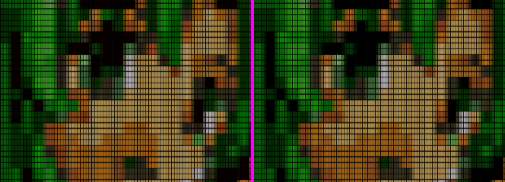

RetroTINK 4K の覚え書き（設定でつまずいた所）
RetroTINK 4K（以下 RT4K）は、古いゲーム機の映像を、今のテレビやモニターにきれいに映すための機器です。とても高機能ですが、メニューは英語で、項目も多く、最初はどこを触れば良いのか分かりませんでした。
このページは、私が TVスワンを映すために設定を詰めたときに、つまずいた所と、分かった事をまとめたものです。TVスワン以外の機器でも、同じ所でつまずくと思います。
- 使った物：RetroTINK 4K Pro、ファームウェア 1.99.19（2026 年 11 月の試験版）
- 自分で試して確かめた事と、人から聞いた事・まだ試していない事は、分けて書いています。
- ファームウェアが変わると、項目の名前や動きが変わる事があります。
関連する記事：TVスワンを RGB で映す
いちばん大事な事：自分の設定を、消さないために
設定のひとまとまりを「プロファイル」と呼びます。プロファイルは、SD カードの中に、ファイルとして保存されます。
私は、詰めた設定を、一度全部失いました。 原因は、配布されているプロファイルを入れ直す作業でした。
Wobbling Pixels さんのプロファイルは、とても良くできていて、私も土台として使っています。新しい版に入れ替えるときの説明書には、「SD カードの中を『Wobbling Pixels』で検索して、出てきた物を全部消してから、新しい物を入れる」と書いてあります。その通りに作業したところ、よけておいたつもりの自分のプロファイルまで、一緒に消えてしまいました。
私は、プロファイルの名前は、自分の物に変えていました。しかし、保存した場所が、配布されたフォルダーの中のままでした。検索で出てくるのは、名前に「Wobbling Pixels」と付いたフォルダーです。そのフォルダーを消したので、中に入っていた自分のプロファイルも、一緒に消えました。名前を変えただけでは、守れません。
- 自分のプロファイルは、自分用のフォルダーを作って、そこに保存する。配布されたフォルダーの中には置かない。
- 配布されたプロファイルを入れ替える前に、SD カードの
profileフォルダーを、丸ごとパソコンに写しておく。 - 設定を詰めたら、その場で保存する（メインメニューの「Save Current Profile」）。保存したら、読み込みの一覧（「Manage Profiles」）に、その名前が実際に出てくるかを確かめる。
- 試している途中の設定は、別の名前で保存する。良い状態の物を、上書きしない。
- 念のため、値をメモに控えておく。私は、控えがあったので、手で入れ直せました。
なお、ファームウェアの更新では、私の環境では、いまのところプロファイルが消えた事はありません。
メニューの地図
設定は、メインメニューの「Advanced Settings」の中に、ページごとに分かれています。私が使ったページは、次の通りです。
| ページ | 何を決める所か |
|---|---|
| Input Source | どの端子から、どの信号で受けるか |
| HDMI Output | 出力の解像度（4K60、1440p60 など） |
| RGB/Component ADC | アナログ映像の取り込み方（細かさ、明るさの幅） |
| SDP Decoder | S端子・コンポジットの色の取り出し方 |
| Color Correction | 明るさ・黒の締まり・色の濃さ |
| Deinterlacer/Film | インターレース（480i）の映像の扱い |
| Scaling/Crop | 切り取りと、拡大の倍率 |
| Processing/Effects | 拡大のぼかし方、スキャンライン、液晶風、マスク |
| Black Frame Insertion | 黒いコマを挟んで、動きをくっきり見せる機能 |
どのページでも、画面の下に、いま読み込んでいるプロファイルの名前と、検出された信号の種類（「CP 480i」など）が出ます。迷ったら、ここを見ます。
設定する順番
RT4K の設定は、前の設定が、後の設定の土台になっています。順番を間違えると、合わせた所が崩れて、何度もメニューを行き来する事になります。私は、次の順番で進めると、やり直しが少なく済みました。
始める前に、ゲームを、動かない、明るい所と暗い所の両方がある画面にしておきます。タイトル画面やメニュー画面が向いています。
| 順 | ページ | する事 | 先に決める理由 |
|---|---|---|---|
| 1 | Input Source | 端子と信号の種類を選ぶ | 絵が出ないと、何も合わせられない |
| 2 | HDMI Output | 出力の解像度を決める。キャプチャーソフトも同じにする | 解像度を変えると、倍率が全部変わる |
| 3 | RGB/Component ADC | Samples per Line を決めて、Auto Phase を実行 | これを変えると、横の切り取りがずれる |
| 4 | RGB/Component ADC | Gain／Offset で、取り込みの幅を合わせる | ここが暗いままだと、次の色の調整が合わない |
| 5 | Color Correction | Input Gain／Input Lift で、明るさと黒を合わせる | 絵がはっきり見えないと、切り取りの端が分からない |
| 6 | Deinterlacer/Film | Bob か Motion Adaptive かを決める | 絵が上下に揺れていると、切り取りを合わせにくい |
| 7 | Scaling/Crop | 上下の切り取り → 左右の切り取り → Scaling Mode | 切り取りで、倍率が決まる |
| 8 | Processing/Effects | スキャンライン、液晶風、マスク | 倍率が決まってからでないと、網目の大きさが合わない |
| 9 | Color Correction | 効果で暗くなった分を、少しだけ足す | 効果を入れると、明るさが変わる |
| 10 | メインメニュー | 自分用のフォルダーに、保存する | — |
後から変えると、やり直しになる組み合わせも、覚えておくと助かります。
| これを変えると | これが、やり直しになる |
|---|---|
| 出力の解像度（手順 2） | 倍率（手順 7）、効果の強さ（手順 8） |
| Samples per Line（手順 3） | 左右の切り取り（手順 7）、Auto Phase |
| 切り取り（手順 7） | 倍率。マスクを使っていれば、網目の位置 |
| スキャンラインやマスクの強さ（手順 8） | 明るさ（手順 9） |
切りの良い所まで進んだら、そのつど、試し用の名前で保存しておくと安心です。途中で分からなくなっても、そこまで戻れます。
つまずいた所
1. モニターが 4K なら、RT4K から 4K で出す
私は最初、1440p で出力していました。4K のモニターにつなぐと、モニターの側が 1.5 倍に引き伸ばすので、ドットの輪郭が少しぼけます。RT4K から 4K60 で出すと、このぼけが無くなりました。
1ドットに使える画素が増えるので、液晶風の表示も、細かく描かれるようになります。
2. キャプチャーソフトの設定を、RT4K の出力と合わせる
キャプチャーソフトの録画設定が、1080p・30 コマになっていた事がありました。RT4K がいくらきれいに出しても、取り込む側が粗ければ、ぼけた絵になります。設定を見比べるときは、まずここを疑うのが近道でした。
RT4K の出力を変えたら、キャプチャーソフトの解像度とコマ数も、同じにします。
3. 切り取り（Trim）の1目盛りは、1行とは限らない
Scaling/Crop の Top Trim／Bottom Trim で、上下を切り取れます。480i の映像では、1目盛りで2行動きました。「あと 10 行切りたい」と思って 10 動かすと、20 行切れます。
Left Trim／Right Trim は、取り込みの1個ぶんずつ動きます。
4. Scaling Mode は、名前が似ていて、動きが違う
拡大の倍率の決め方です。ここが一番分かりにくい所でした。
| 名前 | 動き |
|---|---|
| Auto Fill | 画面の高さいっぱいに拡大（倍率は半端になる） |
| Auto Fill Int | はみ出さない方の整数倍 |
| Auto Fill Int+ | はみ出す方の整数倍（はみ出した分は、画面の外に切れる） |
| Auto Fill Int HV／HV+ | 横も整数倍にする |
| Proportional | 縦の倍率を、自分で数字で決める |
| Free-Form | 縦と横を、別々に決める |
ドット絵をくっきり映すには、整数倍が基本です。ただし、「Int+」は、切り取りを少し変えただけで倍率が1段跳ねて、絵が急に大きくなります。私はこれで何度も混乱しました。いまの倍率は、Scaling Mode のすぐ下の行に「7x 288→2016」のように出るので、数字を見ながら合わせます。
5. 切り取った所に、色の帯が出る
Scaling/Crop の「Masking Color」は、切り取った部分を塗る色です。ここに数字が残っていると、絵の左右に、青や赤の帯が出ます。3つとも 0 にすると、黒になります。
逆に、切り取りの位置を合わせるときは、わざと色を付けると、どこまで切れているかが見やすくなります。
6. Bob と Motion Adaptive
Deinterlacer/Film の Algorithm は、480i の映像を、どうやって1枚の絵にするかの設定です。
- Bob：届いた絵を、1回ごとにそのまま映す。
- Motion Adaptive：前後の絵を見比べて、動いている所を作り直す。テレビ放送のような映像向け。
古いゲーム機の映像には、Bob が合う事が多いです。TVスワンでは、Bob にすると、速い動きのカクつきが無くなりました。
ただし、ファームウェア 1.99.12 では、Bob にすると、数秒おきに絵が1ドット上下に動きました。そのときは Motion Adaptive で避けていました。1.99.19 に更新したら、Bob でも動かなくなりました。ファームウェアで動きが変わる事があるので、うまくいかない設定は、更新のあとに試し直す価値があります。
7. 明るさは、2か所で決まる
映像が暗い、白っぽい、というときに触る所は、2つあります。順番があります。
先に、RGB/Component ADC（取り込みの幅）
- Gain：信号の幅を広げる。横に「Rmax: 111」のように、いま届いている最大の値が出る。
- Offset：全体を上下にずらす。
- Pre-ADC：取り込む前の、大まかな強さ。
次に、Color Correction（見た目の仕上げ）
- Input Gain：全体を明るくする。
- Input Lift：黒を締める（マイナスにすると、暗い所が黒に近づく）。
- Saturation：色の濃さ。
私が試した範囲では、Color Correction は「出力＝入力×Gain＋Lift」という形で働きました。Gain を上げて、Lift を下げる、という組み合わせで、薄くて灰色っぽい絵が、締まった絵になりました。Lift は、−0.97 あたりが下限でした。
上げすぎると、白い文字や明るい所がつぶれます。白い文字がにじまずに読めるかを見ながら、少しずつ動かします。
8. 横の細かさ：Samples per Line と Auto Phase
RGB/Component ADC の「Samples per Line」は、横1行を、何個に区切って取り込むかの値です。機器が出しているドットの速さの、ちょうど整数倍に合わせると、ドットの縦の境目が締まります。
TVスワンは、横1行が約 390 ドットぶんです。初めの値の 1716 だと、1ドットが 4.4 個になり、半端です。1560（390×4）にして、Auto Phase を実行すると、境目がそろいました。

気をつける点が3つあります。
- この値を変えると、横の切り取り（Left Trim／Right Trim）も、合わせ直しになります。
- 「Auto Phase」は、値を変えたあとに実行します。取り込む位置を、境目を避けた所に合わせてくれます。
- S端子では、同じ事をすると、かえってにじみました。 効いたのは RGB のときだけです。S端子では、元の 1716 のままが一番きれいでした。
9. Vert. Pre-Scale は、480i には効かなかった
Scaling/Crop に「Vert. Pre-Scale」という項目があります。行を間引く機能です。TVスワンは同じ行を2回ずつ出すので、半分に間引けば、本来の行数になると考えました。しかし、1/2 にしても、何も変わりませんでした。解像度の高い映像のための機能のようです。
10. 液晶風の表示は、強くすると暗くなる
Processing/Effects の Scanline の Function に、「LCD Mono 1」などの液晶風の表示があります。ドットのあいだに、暗いすき間を描きます。
- 強さ（LCD Subpixel Str.／LCD Vert Str.）を上げるほど、液晶らしくなり、暗くなります。
- 4K にすると、すき間がはっきり描かれるので、同じ強さでも暗く感じました。私は、30 から 15 に下げました。
- 足りない明るさは、Color Correction の Input Gain を少し上げて補いました。
11. マスクで、1ドットを1ますの液晶にする
同じページの Mask は、画像を重ねて、液晶やブラウン管の網目を再現する機能です。「Load from File」で、SD カードの画像を選びます。
Wobbling Pixels さんが配っているゲームボーイカラー用のマスク（15×15 画素）を、TVスワンに使ってみました。ワンダースワンは、縦の行数がゲームボーイと同じ 144 行です。4K で、1ドットをちょうど 15×15 画素にしたところ、マスクのますが、ドットとぴったり重なりました。
- 使うときは、Scanline の Function を Off にして、Vert. Kernel／Hori. Kernel を Nearest Neighbor にします。
- Strength は、0 だと網目が強く、色も少し変わって見えました。私は −8 にしました。
- 1ドットが、マスクの大きさの整数倍になっていないと、網目とドットがずれて、ざらついた絵になります。
12. そのほか
- Wide Tolerance（RGB/Component ADC の Sync の所）を On にしたら、TVスワンは映らなくなりました。同期の弱い機器のための設定ですが、合わない事もあります。
- Black Frame Insertion の項目は、60Hz の出力では「N/A」と出て、選べませんでした。120Hz の出力が要るようです（私は、まだ試していません）。
人から聞いた事・まだ試していない事
- Enhanced S-Video（S端子を HD-15 端子から入れる方式）では、SDP Decoder の Brightness・Contrast は効かず、明るさは ADC の Gain で合わせる、との事です（海外の wiki の記述）。私の環境でも、Gain で合わせました。
- ファームウェア 1.99.9 から、RT4K 本体で画面を PNG に保存できる、との事です（更新履歴の記述）。私は、まだ使っていません。
- Wobbling Pixels さんは、機種ごとのプロファイルをたくさん配っています。中の値は、RT4K に読み込んで、画面で見る事ができます。
設定例：TVスワン（RGB、4K）
私が、いま使っている値です。TVスワンを RGB 出力にする方法は、別の記事に書いています。機器の個体や、ケーブルによって、合う値は変わります。出発点として使ってください。
| ページ | 項目 | 値 |
|---|---|---|
| Input Source | HD15／RGsB | |
| HDMI Output | 4K60 | |
| RGB/Component ADC | Samples per Line | 1560 |
| Sub-Phase | Auto Phase を実行（私の環境では 168.75 deg） | |
| Pre-ADC | −0.7 | |
| Gain R／G／B | 1.887／1.887／1.906 | |
| Offset R／G／B | +100 | |
| Color Correction | Input Lift | −0.72 |
| Input Gain | 3.45 | |
| Saturation | +0.20 | |
| Deinterlacer/Film | Algorithm | Bob、Offset −1 |
| Scaling/Crop | Top／Bottom Trim | −47／−49 |
| Left／Right Trim | −218／−195 | |
| Scaling Mode | Proportional、Vert. Factor 7.500 | |
| Masking Color | 0／0／0 | |
| Processing/Effects | Scanline | LCD Mono 1、強さ 15／15、Normalize Energy On |
この設定で、「7.500x 288→2160」「3.750x 896→3360」と表示されます。ゲームの1ドットが、横も縦も 15 画素の正方形になり、4K の高さいっぱいに映ります。
ADC と Color Correction の値が大きいのは、TVスワンの RGB 出力に、黒の基準になる部分が無く、そのままでは暗く映るためです。くわしくは、詳しい記録に書いています。
設定例：TVスワン（RGB、4K、縦画面のゲーム）
TVスワンは、縦に持って遊ぶゲームを自分で見分けて、縦向きの絵を出します。RT4K の「RoTATE」は、Off のままで大丈夫です。左右には、WonderSwan Color の飾りが出ます。
ただし、横画面用の設定のままだと、次の2つが起きました。
- 上下がはみ出す。 縦画面では、ゲームの縦が 224 ドット（448 行）になります。横画面用の切り取りは 288 行ぶんなので、上下が切れます。
- 全体が白っぽくなる。 明るさの基準にしている「画面の外側の白い枠」が、縦画面では違う絵がらになるためです。黒が灰色まで持ち上がります。
そこで、縦画面用のプロファイルを別に作りました。上の「RGB、4K」の設定から、変えた所だけを書きます。
| ページ | 項目 | 横画面用 | 縦画面用 |
|---|---|---|---|
| RGB/Component ADC | Offset R／G／B | +100 | +58 |
| Color Correction | Input Lift | −0.72 | −0.88 |
| Input Gain | 3.45 | 4.15 | |
| Scaling/Crop | Top／Bottom Trim | −47／−49 | −7／−9 |
| Left／Right Trim | −218／−195 | −366／−367（左右の飾りを消す） | |
| Vert. Factor | 7.500 | 4.500 | |
| Processing/Effects | Scanline | LCD Mono 1 | Off（Kernel は縦横とも Nearest Neighbor） |
| Mask | Off | Multiply、下の 9 画素用のマスク（RGB の方）、Strength −8 |
この設定で、「4.500x 448→2016」「2.250x 576→1296」と表示されます。ゲームの1ドットが 9×9 画素になり、上下に細い黒い帯が付きます（2160÷224 は約 9.6 なので、はみ出さない一番大きい整数倍が 9 です）。
左右の飾りを残したいときは、Left／Right Trim を横画面用と同じ −218／−195 のままにします（表示は「2.250x 896→2016」）。マスクは、どちらでも同じ物が使えます（ドットの位置が、ちょうどマスク 40 ますぶん動くだけなので）。
縦のゲームを遊ぶときは、プロファイルを切り替える事になります。
明るさの合わせ方は、次の順でした。
- ADC の Offset を下げて、持ち上がった黒を下げる。
- Color Correction の Input Gain で、明るい色を上限の少し手前まで上げる。
- Gain を上げると黒も一緒に持ち上がるので、Input Lift を下げて、黒を締め直す。
左右の飾りの地の色は、真っ白ではなく、ごく薄い灰色でした。ここを「白になるまで」上げると、上げすぎになります。黒い線が黒いか、赤や黄色がつぶれていないか、を目安にしました。
9 画素用のマスク（自作）
1ドットが 9 画素のとき、15 画素用のマスクは合いません。9 画素用は見つからなかったので、作りました。自由に使ってください。
- WS_TATE_9x_RGB.bmp：赤・緑・青の縦じまと、格子
- WS_TATE_9x_GRID.bmp：格子だけ（色は変えません）


SD カードの mask フォルダーに入れて、Mask の「Load from File」で選びます。Strength は好みで合わせます（強いほど暗くなります。私は −8 です）。
このマスクは、上の縦画面用の設定（4K 出力）に合わせて、模様の位置をずらしてあります。切り取りや倍率を変えると、格子がドットからずれる事があります。
作るときに、つまずいた事が2つあります。自分でマスクを作る人は、気をつけてください。
- RT4K は、マスクを画面の左端ちょうどからではなく、2 画素左から並べていました（縦は、上端ちょうどからでした）。最初に作った物は、そのぶんだけ横にずれて、ドットの中の色の並びが変わってしまいました。
- ドットの縦の境目は、切り取りの上端から数えた位置には、ありませんでした。 5 画素（半行ぶん）下にずれていました。Bob が、1行おきの絵を半行ずらして並べるためだと思います。切り取りの数字から計算するのではなく、実寸で保存した画面で、絵の境目を測って合わせるのが確実でした。
設定例：TVスワン（S端子）
改造していない TVスワンを、S端子でつないだときの値です。1440p で出力していた頃の物で、4K では合わせ直していません。
| ページ | 項目 | 値 |
|---|---|---|
| Input Source | HD15／YC-Enh（Enhanced S-Video） | |
| RGB/Component ADC | Samples per Line | 1716（元のまま） |
| Pre-ADC | +0.8 | |
| Gain G/Y | 1.645 | |
| SDP Decoder | Chroma | +10 |
| CTIE | 3 | |
| Deinterlacer/Film | Algorithm | Bob、Offset −1 |
| Scaling/Crop | Top／Bottom Trim | −38／−34 |
| Left／Right Trim | −203／−218 | |
| Scaling Mode | Auto Fill Int+（1440p で縦5倍） |
間違いや、もっと良い設定をご存じの方は、ぜひ教えてください（X：@TEMJISO）。